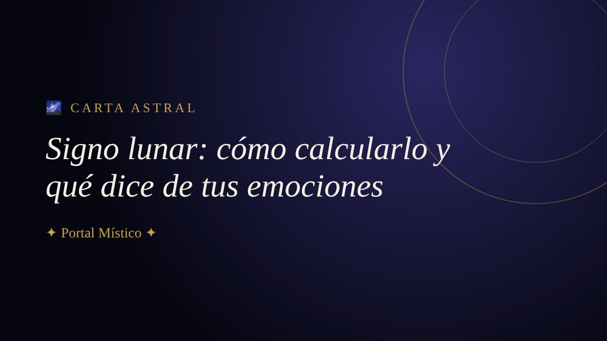

Signo lunar: cómo calcularlo y qué dice de tus emociones

Mucha gente descubre su ascendente, se emociona, y a los dos días pregunta lo mismo: «vale, ¿y la Luna?». Es la pregunta correcta. Si el signo solar es lo que dice el horóscopo del periódico, el signo lunar es lo que explica por qué a veces no te reconoces en él.
Este artículo va de lo práctico: qué es exactamente, por qué un dato tan simple como tu hora de nacimiento puede cambiarlo y cómo sacarlo en un minuto con la calculadora de signo lunar. Con un ejemplo real de esta misma semana, calculado con los datos astronómicos del portal.
Qué es el signo lunar, sin vueltas
Es el signo del zodiaco en el que estaba la Luna en el instante en que naciste. Nada más. No hay misterio en el dato; el misterio, si quieres llamarlo así, está en lo que la tradición le atribuye.
Según la astrología, el Sol marca la identidad y la Luna marca el mundo emocional: cómo reaccionas cuando nadie te mira, qué necesitas para sentirte seguro, qué hábitos te calman y cómo cuidas (o te cuesta que te cuiden). Simbólicamente, el Sol es el proyecto y la Luna es la casa. Por eso hay personas con Sol en Capricornio que se muestran serias y organizadas y, en casa, con Luna en Piscis, son pura sensibilidad. No es una contradicción; es la lectura de dos capas.
Para quien quiera la definición corta, el glosario la resume en un párrafo. Aquí vamos a lo que casi nadie explica: cómo se calcula y dónde falla.
Por qué la Luna es la más sensible a la hora de nacimiento
El Sol tarda un mes en cambiar de signo. La Luna recorre los doce signos en unos 27,3 días, así que pasa unos dos días y medio en cada uno. Eso significa que en cualquier fecha hay una ventana en la que la Luna cambia de signo, y si naciste dentro de esa ventana, solo la hora (y el lugar, por el huso horario) decide cuál es el tuyo.
Veamos la Luna de esta semana, con las posiciones calculadas a las 00:00 UTC de cada día (comprobadas con las efemérides Horizons del JPL de la NASA):
- 22 de noviembre: Aries (24°)
- 23 de noviembre: Tauro (8°)
- 24 de noviembre: Tauro (23°)
- 25 de noviembre: Géminis (8°)
- 26 de noviembre: Géminis (23°)
- 28 de noviembre: Cáncer (23°)
- 1 de diciembre: Virgo (5° 35')
Fíjate en el día 24. A medianoche UTC la Luna sigue en Tauro, a 23°, y entra en Géminis hacia las 11:09 UTC. Traducido a relojes de pared: las 12:09 en Madrid, las 5:09 de la mañana en Ciudad de México, las 6:09 en Bogotá y las 8:09 en Buenos Aires y Santiago.
Ahora el caso práctico. Dos personas nacen el 24 de noviembre en Ciudad de México: una a las 4 de la madrugada y otra a las 10 de la mañana. Mismo día, mismo Sol en Sagitario, pero la primera tiene la Luna en Tauro y la segunda en Géminis. Tauro busca calma, rutina y cosas que se puedan tocar; Géminis necesita conversación, variedad y moverse. Dos maneras muy distintas de gestionar un mal día. Y todo por unas horas.
Cómo calcularlo paso a paso
- Abre la calculadora de signo lunar.
- Introduce tu fecha de nacimiento.
- Añade la hora si la sabes. Si no, marca «No sé la hora de nacimiento».
- Elige tu ciudad de nacimiento (o escribe coordenadas y zona horaria si no aparece). Importa porque la hora local se convierte a UTC antes de calcular.
- Pulsa el botón y lee el resultado, que además te dice en qué fase estaba la Luna.
Los cálculos se hacen en tu dispositivo y el portal no guarda tus datos. Si no sabes la hora, la calculadora revisa el día completo: si la Luna no cambió de signo ese día, el resultado es seguro; si cambió, te enseña las dos opciones. Esa honestidad me parece lo más útil del método, porque inventarse una respuesta única sería peor.
Un consejo si dudas de la hora: mira el certificado de nacimiento o pregunta en casa. Muchas actas la incluyen y la gente no lo sabe. Y si te dieron una hora «redondeada» (las 3 en punto, las 6 y media) tómala con margen: solo importa si cae cerca de un cambio de signo.
Qué suele decir la tradición de cada elemento
No voy a escribir doce fichas idénticas; sirve más pensar por elementos, que es como se agrupan los signos (más detalle en los cuatro elementos del zodiaco). Lo que sigue es lectura simbólica, no un diagnóstico.
Luna en fuego: Aries, Leo, Sagitario
Se asocia con emociones que van rápido y se notan. Necesitan acción para calmarse, y la tradición habla de generosidad y de orgullo herido cuando se sienten ignoradas. Un paseo largo les sienta mejor que una charla de dos horas.
Luna en tierra: Tauro, Virgo, Capricornio
Seguridad a través de lo concreto: casa ordenada, comida rica, agenda predecible. Tienden, según la tradición, a mostrar el afecto con hechos más que con palabras. El estrés les llega cuando todo cambia a la vez.
Luna en aire: Géminis, Libra, Acuario
Procesan las emociones hablándolas o escribiéndolas. Necesitan entender lo que sienten antes de sentirlo del todo, lo cual a veces parece frialdad desde fuera. Les calma tener espacio mental y conversaciones donde puedan pensar en voz alta.
Luna en agua: Cáncer, Escorpio, Piscis
La más intensa y la más privada. Absorben el ambiente de la habitación; en Cáncer, además, la Luna está «en casa» porque es su regente tradicional (puedes leer más en la página de Cáncer). Necesitan tiempo a solas para recargarse.
Signo lunar frente a ascendente: no son lo mismo
Se confunden bastante. El ascendente es la máscara, lo que se ve primero de ti; la Luna es lo que ocurre dentro. Y se calculan distinto: el ascendente cambia cada dos horas aproximadamente (necesita hora y lugar exactos), la Luna cada dos días y medio. Por eso se puede calcular la Luna con bastante tolerancia a un error de hora, pero el ascendente casi nunca.
Si quieres verlo todo junto (Sol, Luna, ascendente, planetas y casas), la carta astral completa lo hace en un solo paso.
Mitos y límites, para no pasarse
«Mi Luna explica todo lo que me pasa». No. Es una pieza, y las lecturas de una sola pieza se quedan cortas. Una carta se interpreta en conjunto.
«Si cambié de Luna al revisar mi hora, mi carácter cambió». Lo que cambió es el relato que te cuentas, no tú. Léete las dos descripciones y quédate con la que te haga clic, pero no la fuerces.
«La astrología predice mi vida emocional». Aquí se usa como entretenimiento y como lenguaje simbólico para pensar en uno mismo. No sustituye a nada profesional si estás pasando un mal momento.
Un matiz técnico, por si lo comparas con otras webs: algunas usan el zodiaco sidéreo (el que se usa en la astrología védica) y dan un signo distinto al tropical, que es el que emplea la tradición occidental y esta calculadora. Si el resultado no coincide con otra web, mira primero qué zodiaco usa.
Qué hacer con el resultado
Una idea sencilla: durante una semana, apunta qué te calma de verdad y qué te irrita sin motivo claro. Luego compáralo con la descripción de tu Luna. Si coincide, tienes un vocabulario útil; si no, no pasa nada, la tradición tampoco es una ley.
Para relaciones, la Luna se compara aparte: dos personas con Lunas en elementos compatibles suelen «hablar el mismo idioma» al discutir. Puedes probarlo con la sinastría de pareja. Y si quieres ver por qué signo pasa la Luna hoy, tienes el calendario lunar de noviembre de 2026 y la Brújula Lunar; y la superluna del Castor del 24 de noviembre fue con la Luna en Géminis.
Preguntas frecuentes
¿Cuántas veces cambia la Luna de signo al mes?
Doce, una por cada signo, aproximadamente cada dos días y medio. La vuelta completa al zodiaco dura unos 27,3 días.
¿Puedo calcular mi signo lunar sin saber la hora?
Sí, en muchos casos. Si ese día la Luna no cambió de signo, el resultado es seguro. Si cambió, hay dos posibilidades y tendrás que decidir cuál te representa mejor o averiguar la hora.
¿Importa la ciudad donde nací?
Sí, porque la hora local se convierte a hora universal con el huso horario del lugar. Cerca de un cambio de signo, esa conversión puede decidir el resultado.
¿La fase lunar de nacimiento es lo mismo que el signo lunar?
No. El signo es dónde estaba la Luna en el zodiaco; la fase (nueva, creciente, llena, menguante) es su relación con el Sol. La calculadora te da las dos cosas.
¿Mi signo lunar cambia con los años?
No. Es el de tu momento de nacimiento y no cambia. Lo que se mueve es la Luna en el cielo de cada día, que es lo que mira el horóscopo diario.
¿Qué te pareció este artículo? Cuéntanos tu experiencia.
¡Gracias por tu comentario!